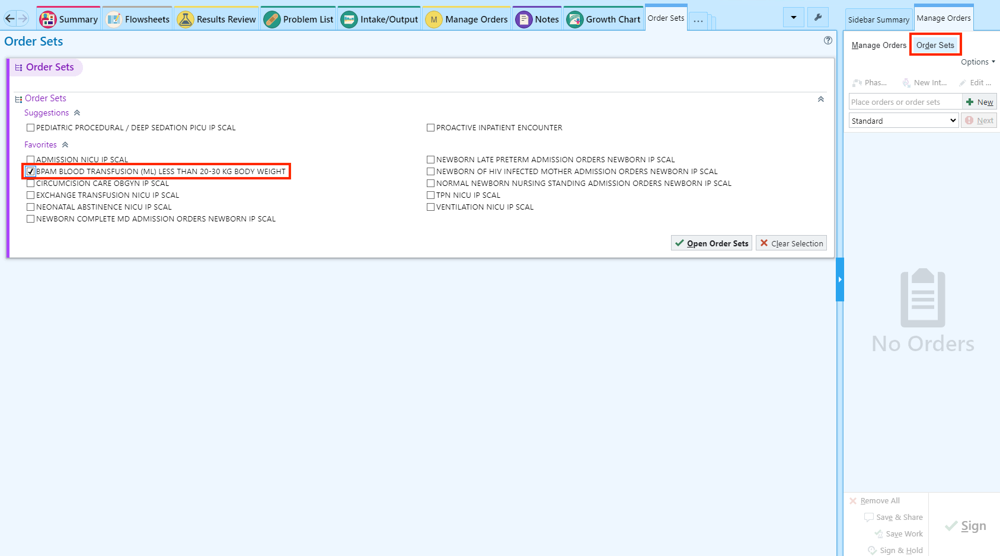
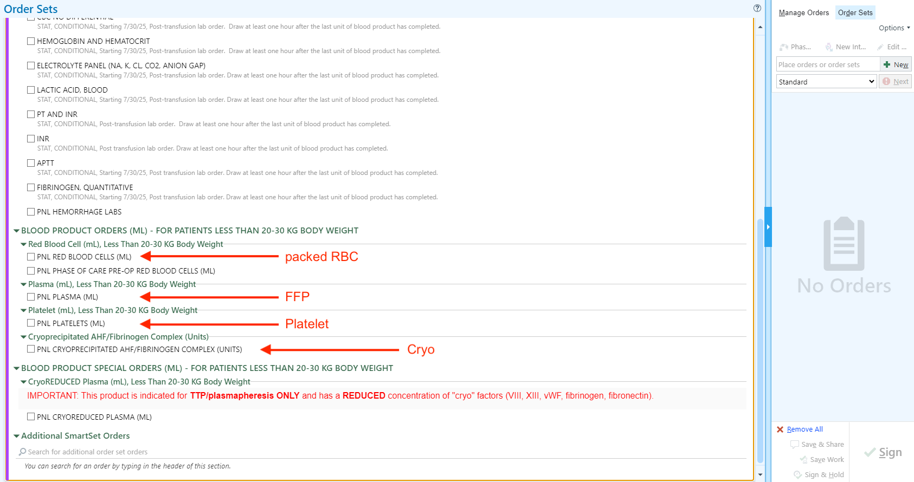
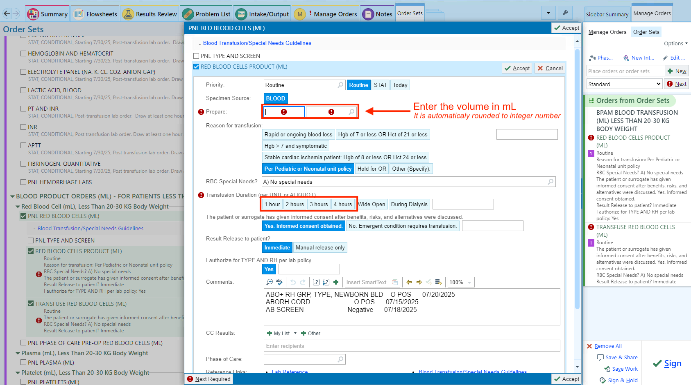
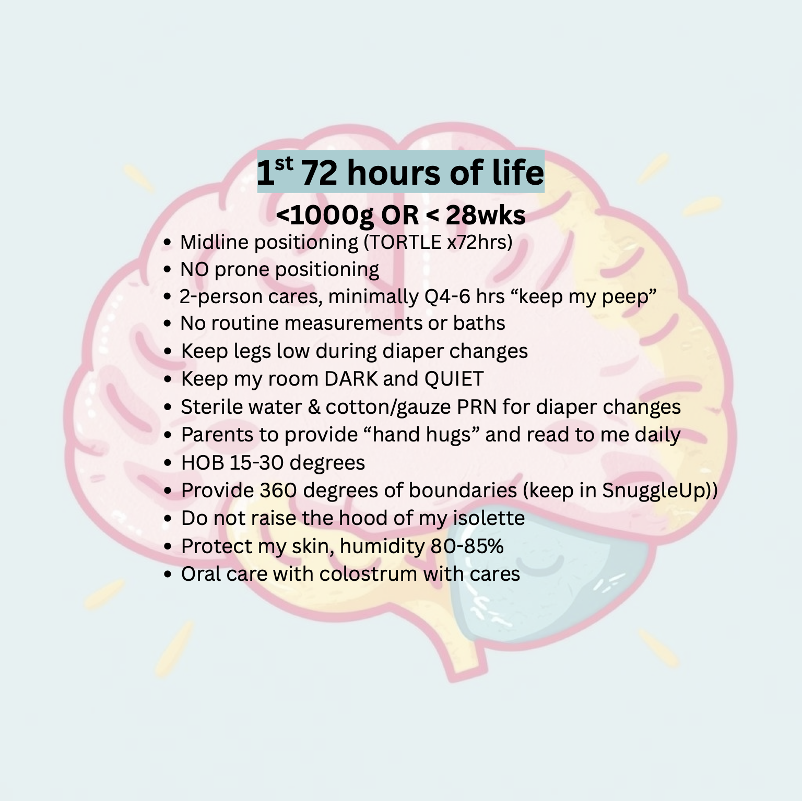
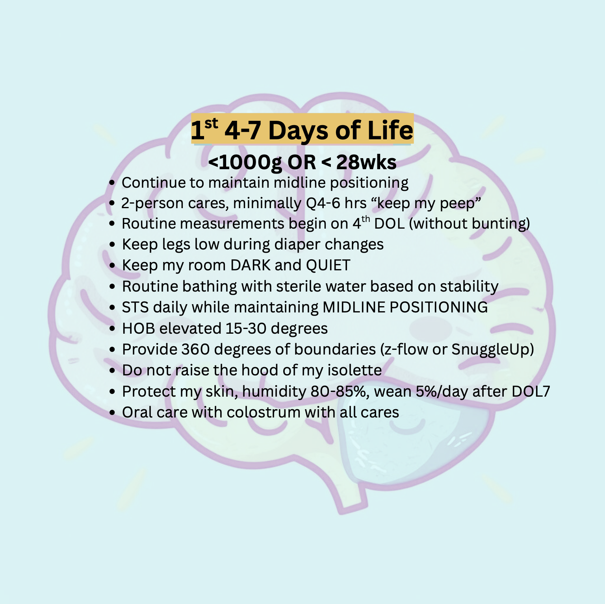

21 VLBW/ELGAN/ELBW Infants
Rouding Sheet
21.1 Thermoregulation and Heat Loss Prevention
Labor & Delivery / OR
- Maintain L&D/OR temperature at 70-74℉
- Preheat the radiant warmer before birth and set on servo-control mode
- Use prewarmed blanket to dry the newborn during delayed cord clamping
- use prewarmed blanket to receive the newborn and dry under the warmer
- Place temperature probe as soon as baby is under the warmer
- Monitor temperature frequently (every 5-10 minutes) prior to transfer to the NICU
- Maintain axillary temperature between 36.5℃ - 37.5℃
- Place a thermal mattress under the blanket on the radiant warmer
- Wrap the baby in a polyethylene plastic bag or wrap (<28 weeks and/or < 1,000 grams)
- Place a prewarmed hat on the baby’s head (as soon as possible)
- Keep the newborn fully covered during resuscitation and stabilization
NeoDrape Wrapping During Delayed Cord Clamping
Vaginal delivery
Cesarean delivery
Transport
- Prewarm transport incubator
- Use warming measures such as thermal mattress during transport
NICU
- Prewarm the incubator before the infant arrives in the NICU
- Keep incubator humidity at 80% (<30 weeks and/or < 1,000 grams)
- Prewarm linens and other items
- Use thermal mattress if temperature is below 36.5℃
- Monitor temperature closely throughout procedures
- prewarm IV fluids
- Ensure ventilator heaters are set at a warm temperature before use
21.2 ELGAN/ELBW Respiratory Protocol
Refer to ELGAN/ELBW Respiratory Support Protocol for the First 72 Hrs page
BPD bundle
Refer to No-BPD Prevention Bundle page
21.3 ELGAN/ELBW Gut Health Protocol
Probiotics (Evivo) use
Refer to Probiotics (Evivo) page
Important
Probiotic use is temporarily suspended until further notice.
Glycerin use
Administer 0.5 mL/kg every 12 hours until meconium is fully passed and stool transitions.
21.4 Screening
Sepsis screening and empiric antibiotic use
GA < 32 weeks and BW < 1,500g
- Blood culture
- 1 blood culture if no central line
- 2 blood cultures if central line is in place
- Empiric antibiotics
- Ampicillin and gentamicin if no other nephrotoxic medication or no signs of AKI
- Ampicillin and ceftazidime/cefotaxime if presence of other nephrotoxic medication or has/has had AKI
GA ≥ 32 weeks or BW ≥ 1,500g
- Blood culture: obtain 2 from different sites
- Empiric antibiotics
- Ampicillin and gentamicin if no other nephrotoxic medication or no signs of AKI
- Ampicillin and ceftazidime/cefotaxime if presence of AKI
Thyroid screening
Indication
- BW ≤ 1,500g
- Same-sex if chorionic status not known
Timing
- 2, 4, 6 weeks of life
Labs
- TSH only
Head Ultrasound
Pediatrics (2020) 146 (5): e2020029082. https://doi.org/10.1542/peds.2020-029082
Indication
- GA < 31 weeks or BW < 1,500 grams
Timing
- DOL7 & 30
Retinopathy of prematurity
Pediatrics (2013) 131 (1): 189–195. https://doi.org/10.1542/peds.2012-2996
Indication
- GA < 31 weeks or BW ≤ 1,500 grams
- GA ≥ 31 weeks or BW > 1,500 grams with risk factors
Timing
| Gestational Age at Birth, wk | Age at Initial Examination, wk |
|---|---|
| Postmenstrual | Chronologic |
| 22 (a) | 31 |
| 23 (a) | 31 |
| 24 | 31 |
| 25 | 31 |
| 26 | 31 |
| 27 | 31 |
| 28 | 32 |
| 29 | 33 |
| 30 | 34 |
| Older gestational age, high-risk factors (b) | |
| Shown is a schedule for detecting prethreshold ROP with 99% confidence, usually before any required treatment. |
Note
- This guideline should be considered tentative rather than evidence-based for infants with a gestational age of 22 to 23 wk because of the small number of survivors in these postmenstrual-age categories.
- Consider timing based on severity of comorbidities.
21.5 Blood transfusion
For all ELGAN and ELBW infants
- Obtain Type & Screen with confirmation ON ADMISSION
- one specimen from cord blood
- one speciment from umbilical line during line placement
- Obtain blood transfusion consent ON ADMISSION
Ordering blood product
- Use the BPAM orderset

- Select the blood product type

- Enter the volume and the duration

21.6 Prophylaxis
Systemic fungal infection
Fluconazole 3mg/kg/dose twice weekly for 6 weeks (42 days) or until central line removed, whichever comes first.
21.7 Neuroprotective Care
First 72 hrs of life

4 to 7 days of life
